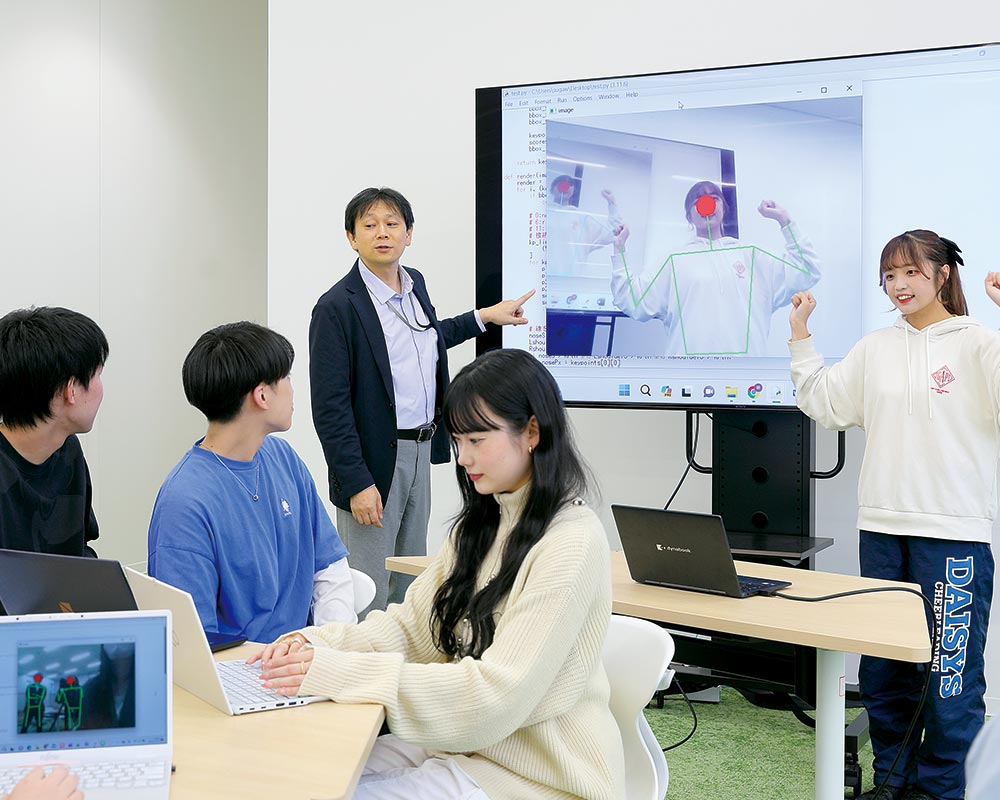

About
東北学院大学 菅原研究室は、
画像情報に基づいたロボットの制御に関する研究を主として、
News
Research

01
群ロボット
「たくさんいる」を活かす、複数台で1つの仕事をするロボット。
一般的には互いが助け合うが、一部を犠牲にしたり利己的な行動が結果的に助け合いになったりする考え方もある。
#群知能ロボット

02
体を動かすシステム
小型ロボットに取り付けられたカメラから世界を見てみるシステム。
足踏みや首振りと連動して動くロボットを操作して、遊びやエクササイズができる。
#単体ロボット
#エクサゲーム

03
プロジェクタ応用システム
インタラクティブなプロジェクタを制御するシステム。
粘土を利用したり動きに反応するプログラムを利用したりして、「つくる楽しさ」と「動かす楽しさ」を考える。
#プロジェクタ応用

04
教育システム
ロボットを使って子どもの学習を手助けするシステム。
視覚障害のある子どものためのプログラミング環境開発や、間違いを訂正させることで学習を支援するロボットの制作を行う。
#視覚障がい児童向け

05
情報学演習
3年生の演習詳細についてはこちら。
プログラミング、データ分析、プレゼンテーションを中心に行っている。
#情報学演習
Member

菅原研 教授
所属：東北学院大学 情報学部 データサイエンス学科
専門：自律分散システム
菅原研究室は、「うごくもの」を見て、しくみを考え、じっさいにつくる——そんな知的な楽しみを大切にしている研究室です。
たとえば、ロボットが協力して動くしくみを考えたり、見えにくさを抱える人のためのツールをつくったり、プロジェクタを使って楽しい空間をデザインしたりしています。
うごくものを見て・考えて・つくることに興味がある人、ここでぜひ一緒に楽しみましょう。
Contact
Email :
sugaken(at)mail.tohoku-gakuin.ac.jp
Address：
〒984-8588 仙台市若林区清水小路3-1
東北学院大学 五橋キャンパス
個人研究室S7H ゼミ室S706
Access：
JR仙台駅から徒歩約15分
地下鉄南北線 五橋駅 直結